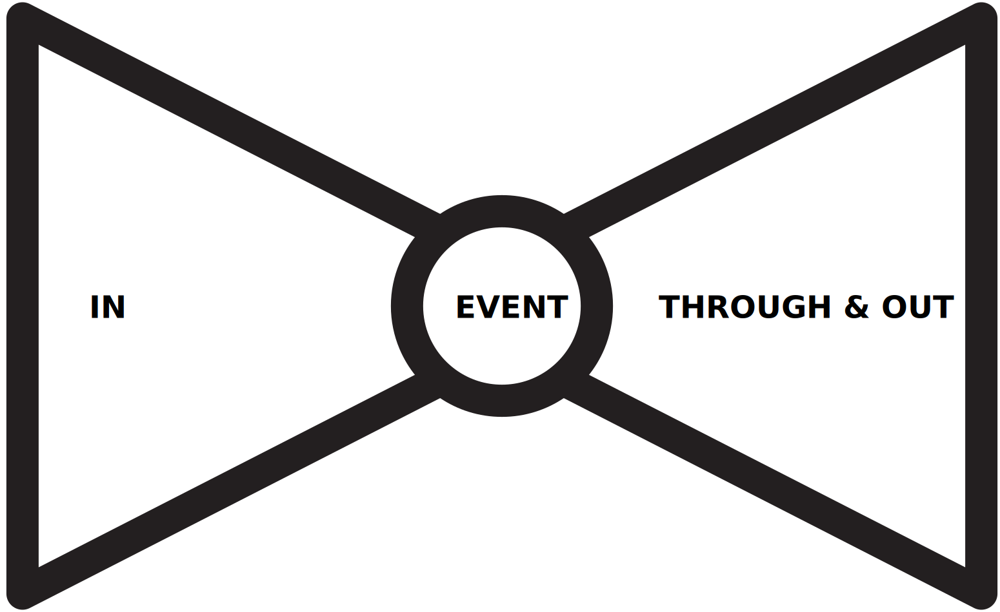
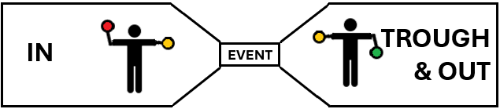
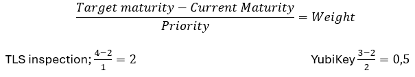

IntroTake #002
Bow-Tie! April 2025
The Bow tie article on Wikipedia revealed an interesting origin story: Croatian mercenaries?! Well, bow-ties do remind me of Bond. James Bond, the secret agent with a license to kill... The article also has the quote:
The bow tie hints at intellectualism, real or feigned, and sometimes suggests technical acumen, perhaps because it is so hard to tie".
Warren St John (The New York Times, 2005)
And I found that to be quite suitable because what I really want to talk about is a Wikipedia "disambiguation", the Bow-tie diagram. I want to use this tool to build actual technical acumen, to help "kill" both uncertainty and inactivity. And to make it easier to answer the question "What can we do to anticipate and better handle Information Security Events?"
I've dabbled with bow-tie diagrams for some time and the iteration I am currently operating is quite well suited for use with cyber-attacks. To help me find standard terms that are freely available I looked at
- the EU Risk Management Toolbox, this provides mappings for Terms, Assets, Threats and Risk-Impact Levels.
- the controls from ISO27001/2.
- the Unified Kill Chain (UKC); I placed the tactics found here into a bow-tie that is also a fishbone diagram.
Step 1:
The first thing to do when working on a bow-tie model is to identify an Event to prepare for.
The Event is the center and also the smallest part of the bow-tie; a reflection on the fact that you have little control over the event itself.
Step 2:
Then we look at the left part of the bow-tie, here I placed the IN part of the unified kill chain. This is where you have your Preventive controls, the rules and logging you have in place here will help greatly with the Identify part of Incident Management. And this is the only chance you have to impact the Probability of the event occurring. Think of how you've installed door locks at home and how you have limited the number of keys that are issued.
Step 3:
I placed the Through and Out parts of the Unified Kill Chain in the right part of the bow-tie, here we will use our more Reactive controls. These are the controls that we put in place to help identify, contain, eradicate and recover from the Event - the of the Incident Management process. To be clear, we can and should put these controls in place prior to the Event. And this is, arguably, the only chance you will get to impact the Consequence of the event. Think of the Smoke Detectors you have added to your house, did you set them up to alert an alarm central or the fire department?
Step 4:
The bow-tie model allows for a risk assessment before and after proactive controls, I've visualized this using stick figures or traffic lights. The following shows a high (red) risk that the proactive controls help reduce to a medium (orange) risk. Only by implementing controls to address the Through and Out stages of the Cyber Kill Chain are we able to lower the risk level to an acceptable level, possible even to low (green).
Step 5:
In our workshops we have taken this model yet another step further by individually voting and adding comments as it comes to our assessment of the maturity of each of the controls that we have chosen to treat this event with. We use the Cyber-security Maturity Model as this provides efficient visualization and can help simplify workshop discussions.
(Perhaps something for a future post?)
Step 6:
And finally, once you have assessed your maturity, you should look at where you would want to be. One example could be to fully implement a Strong Authentication control such as Multi-Factor Authentication (MFA). And, keep in mind, the scope of the bow-tie will help prioritize where / for whom this control should be implemented / improved first. This helps with identifying the effort, cost and user impact that will help determine priority. Once you look at specific scenarios it can be a lot easier to identify quick-wins, the low-hanging fruit.
Prioritize:
To find and prioritize your next steps you can divide the gap between where you are today and where you want to be by the priority you have set. Some control frameworks will tell you which areas to focus on first.
If you review your security controls in light of an Event then implementing TLS Inspection and deploying YubiKeys could be identified as steps to take to improve your security posture. But the level of improvement held up against your calculated priority indicates that the TLS inspection has the highest Weight and should be completed first.
Another example could be that a Vulnerability Management program is great, but you first need to know what components you are using. So Inventory should come first.
(Current and Target maturity are very well suited for Spider Charts. Let's get back to that.)

Read more:
- IntroTake#001 - Taxonomy: I find that the use of ISO standard helps me map out my controls against other frameworks.
- https://en.wikipedia.org/wiki/ - Bow-Tie Bow-Tie diagram ISO27005 ISO_31000
- https://www.iso.org - Sectors > IT Technologies
- Unified Kill Chain The UKC threat modeling design was created to raise “resilience against advanced cyber-attacks". It is recognizable to most as it extends and combines existing models, such as Lockheed Martin's Cyber Kill Chain® and MITRE's ATT&CK™.
- EU ENISA Risk Management Toolbox